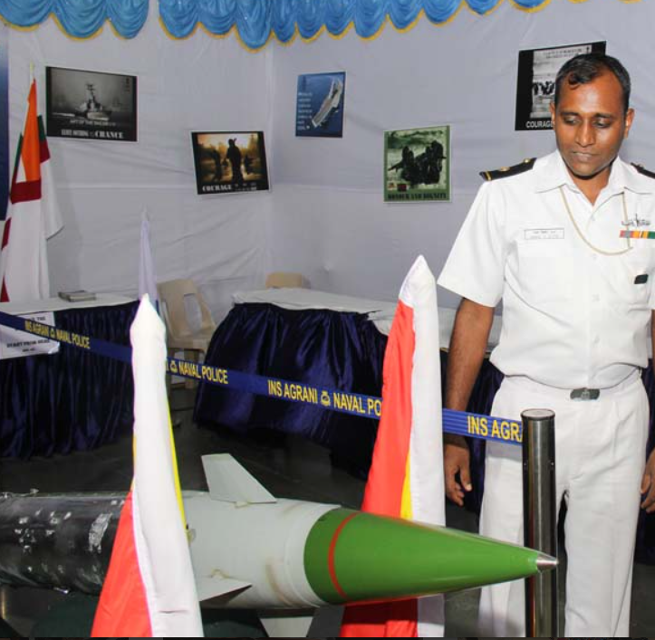

ABOUT EVENTS


Anokha is a three-day confluence of technology, intelligentsia, and cultural indulgence. This Techfest boasts of an annual footfall of around 15000 participants, 100+ highly competitive technical contests & competitions, 30+ workshops by top experts from industry, and a cornucopia of events from many other fascinating domains.
One of India’s top techfests and first to have United Nations Academic Impact (UNAI) accreditation.
Participation by thousands of students all over India.
MAIN EVENTS
- Seminars
- Workshops
- Tech Talks
- Paper Presentation
- Poster Presentation